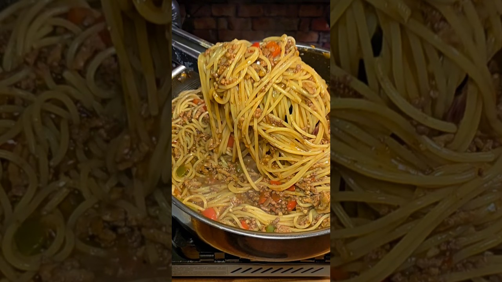

Source: BigYellowGuyCooks – YouTube
1 lb ground beef
1 lb ground turkey
1 packet Lipton Savory Onion Mix
3 Tbsp all-purpose flour
2 Tbsp tomato paste
1 medium red onion, diced
1 red bell pepper, diced
1 green bell pepper, diced
2 Tbsp fresh garlic, minced
1 box beef broth
1 Tbsp salt-free Tony Chachere's seasoning
1 tsp salt
1/2 Tbsp Italian seasoning
1 Tbsp Worcestershire sauce
1 box spaghetti
1 cup reserved pasta water
2 Pillsbury French bread loaves (dough)
2 Tbsp butter, melted
1 Tbsp garlic powder
1/2 cup Parmesan cheese (shredded or grated)
1 Tbsp dried parsley
1 egg, for egg wash
Brown the meat. Cook the ground beef and turkey in a large skillet until fully browned. Do NOT drain the fat.
Build the base. Push the meat to one side. Add the flour and tomato paste into the fat and cook 2–3 minutes, until darkened and slightly nutty.
Add veggies & liquid. Add the onion and peppers; cook 2 minutes. Pour in the beef broth and stir well.
Add flavor. Stir in the garlic, Worcestershire, Tony's, salt, Italian seasoning, and Lipton onion mix. Scrape the bottom of the pan.
Simmer. Reduce the heat and let the sauce thicken.
Cook the pasta. Boil the spaghetti in salted water. Reserve 1 cup pasta water, then drain.
Finish. Add the noodles to the sauce and toss, using pasta water as needed to loosen.
Garlic butter Parmesan bread (optional). Unroll the dough, spread with butter, add Parmesan, and roll back up. Place side by side in a loaf pan. Brush with egg wash and bake per package instructions (add up to 5 extra minutes if needed). Brush with melted butter after baking.
Cook the flour and tomato paste properly to avoid a raw taste.
The sauce should be thick, glossy, and cling to the noodles; use pasta water to adjust thickness.
The garlic bread ingredient list includes garlic powder, dried parsley, and melted butter (for brushing after baking) that aren't called out by name in the numbered step — combine them with the Parmesan for the filling / finishing butter.